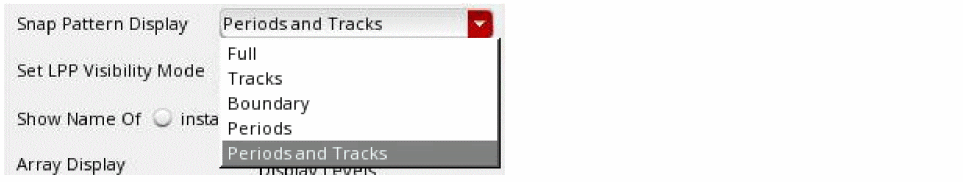
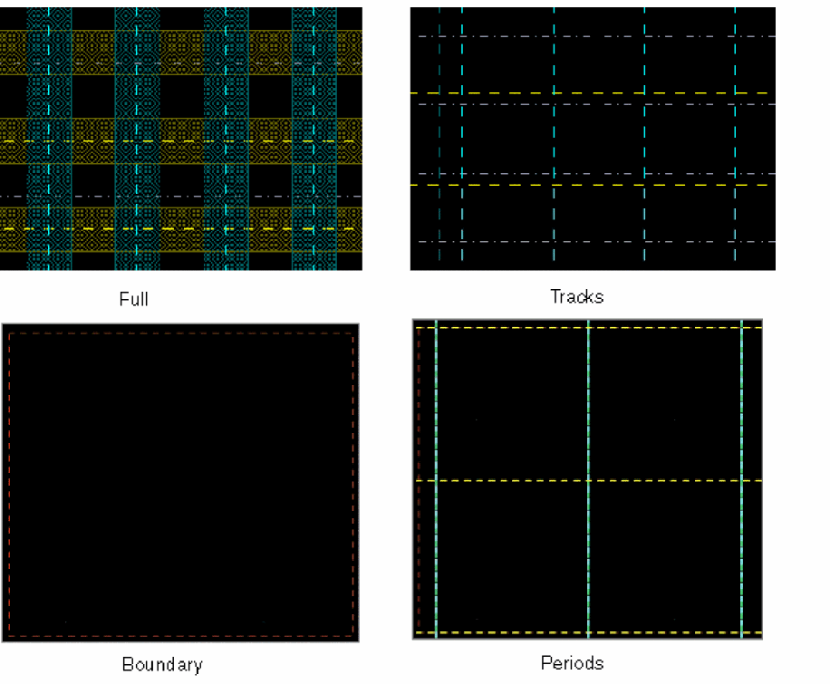
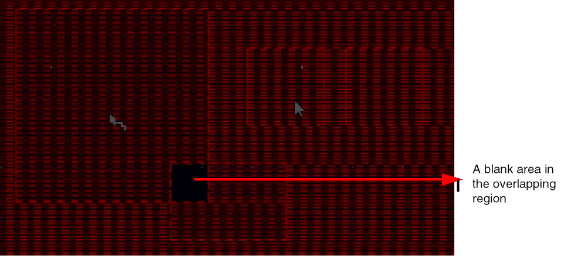
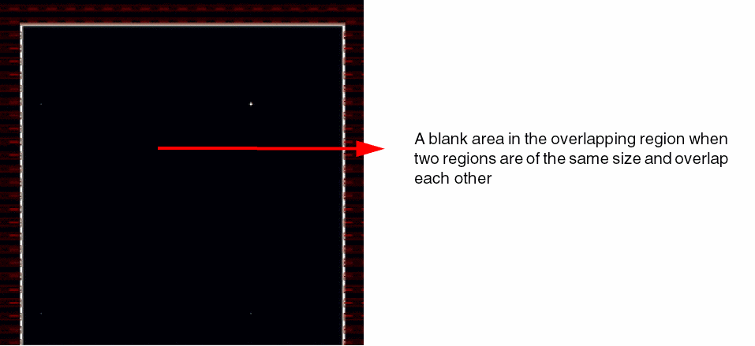
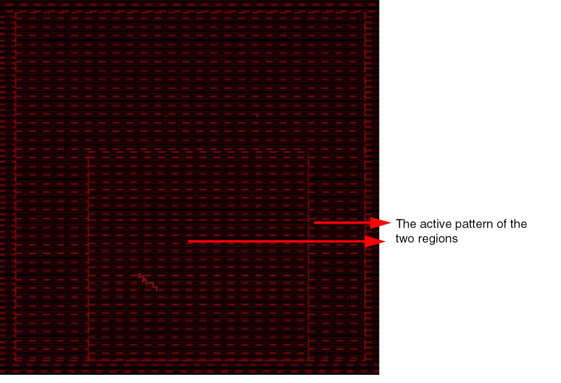
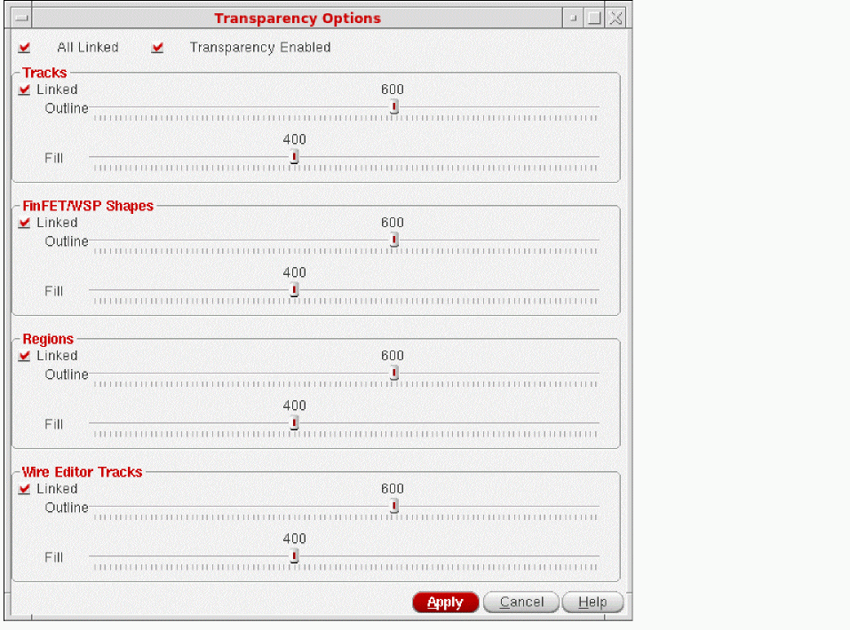

16
Width Spacing Pattern Support in Layout Editing
This chapter includes the following topics:
- Overview
- Snapping Behavior of Objects in Width Spacing Patterns
- Enhancements in Editing Commands
- Enhancements in Create Commands
- Display Enhancements for WSP
- Interactive Snapping
- Interactively Setting Color on a Selected Object
Overview
Virtuoso has been enhanced to support snapPatternDefs called
The figure below illustrates that each width spacing pattern is a sequence of width-space pairs. Patterns are specified as width and space pairs. Groups of width and space pairs can be repeated. The first track of the pattern is anchored to the period grid using an offset.
Controlling the Display of Width Spacing Patterns
The layout editor has been enhanced to visualize the width spacing patterns. You can control the display of width spacing patterns through the Display Options form or Palette assistant.
Display Options Form
You can control the display of width spacing patterns using the Snap Pattern Display option in the Display Options form. In addition to boundary and tracks, you can now display periods for WSPs.
-
Choose Options – Display.
The Display Options form opens.
 -
Select one of the following from the Snap Pattern Display list:
- Full: Displays the snap pattern (SP) boundary, tracks, fins, and width spacing patterns periods.
- Tracks: Displays the snap pattern boundary and tracks.
- Boundary: Displays only the snap pattern boundary.
- Periods: Displays only the width spacing pattern periods.
-
Periods and Tracks: displays the width spacing patterns periods and snap pattern tracks.
-
Click OK.You can use the
leCycleSnapPatternDisplaySKILL function to cycle through the different snap pattern display types. You set the default value using the new snapPatternDrawingStyle environment variable.
Palette Assistant
You can control the visibility of snap patterns (Local Grids, Global Grids, and Width Spacing Grids) through the Grids panel of the Palette assistant.
The layerset file references snap pattern entries by the snap pattern Def name. For example, the local grid named fbd46 and WSP grid named M5WSP, shown in the figure above, are listed as follows in the layerset file:
GridLayer Local_Grids;fb46 t NA
GridLayer Width_Spacing_Grids;M5WSP t NA
Grids Panel
The visibility settings of WSP grids are cellview specific. Therefore, if you have two different cellviews open and you modify the visibility setting of a WSP grid in one cellview, the visibility setting of this WSP grid is not affected in the other cellview.
In the example shown below, you can see that the visibility settings of WSP grids in the two open cellviews are identical.
If you now turn off the visibility of WSP grid M4WSP in cellview even_odd, you will find that the visibility setting of WSP grid M4WSP in cellview inst_snapping remains unchanged.
However, while editing a cellview, if you run the Edit In Place command or descend into a different cellview, the visibility settings of WSP grids are refreshed to reflect the settings for the cellview being edited, as shown in the example below.
Snapping Behavior of Objects in Width Spacing Patterns
Pin Snapping
A pin that has the snapping LPP that cannot be snapped to a snap pattern will be snapped to a width spacing pattern. A pin will either snap to a snap pattern or a width spacing pattern, but not both.
If a pin shape can be snapped to a snap pattern, there will be no change in behavior. Otherwise, it will try to snap to WSP. WSP snapping is only supported for rectangular and not polygon pins. The center of the pin is snapped to the center of the closest track.
For snapping a pin to a WSP region shape, the applied pattern is considered; and for a global WSP, the default active pattern is considered.
If the target track width is greater than the pin width, the pin width is updated to match the track width. However, if the track width is less than the pin width, the pin is updated based on the value of the minWidth constraint defined in the technology file.
Pin Snapping for Overlapping Regions
There regions can be multiple overlapping regions and the snapping behavior is described below:
-
Region R1 partially overlaps another region R2
The region R1 hasWSP1as the active pattern and the region R2 hasWSP2as the active pattern. The overlap area of the two regions does not have any pattern available and displays a blank area. Also, a pin cannot be snapped inside the overlapping area.
 -
Two regions with the same size overlap each other
The two regions R1 and R2 have the same size. The region R1 hasWSP1as the active pattern and the region R2 hasWSP2as the active pattern. In this case, no snapping is possible inside the overlapping region and pins cannot be created inside this region.
 - Region R1 is fully enclosed in another region R2
-
Region R1 has
2xWidthas the active pattern and region R2 hasWSP1as the active pattern. The tracks in the innermost region are effective for pin snapping. The tracks of R1 are used for snapping pins in the overlapping area and in the remaining area the tracks of R2 are used for snapping.

In WSP detail mode snapping, if your design has pins, they are used for snapping. However, if pins are not available in the design, rectangles, pathSegs, two-point paths, and rectangular polygons are used for snapping.
Region Shape Snapping
A region is any shape drawn on a WSP LPP. The region’s widthSpacingSnapPatternDef may or may not be defined as part of the global WSP grids. You can create a region shape on a non-global WSP grid with a period different than the period of the global grid.
The snapping LPP of the region’s widthSpacingSnapPatternDef is used to find the global WSP grid to which the region shape snaps. If there are multiple global grids to which the snapping layers of region widthSpacingSnapPatternDef can snap, the region is snapped to the first matching global grid.
For vertical WSPs, the region shape is snapped along the x-direction. For horizontal WSPs, the region shape is snapped along the y-direction.
Region snapping is supported only for rectangles and polygons. If the WSP LPP is also the snapping LPP of a snapPatternDef, the region shape is snapped only to the WSP grid.
Region Group Snapping
A region group is an oaFigGroup that contains only WSP region shapes or snap pattern shapes. In other words, the LPP of each shape in the oaFigGroup has a snapPatternDef or widthSpacingSnapPatternDef.
The reference region shapes along each direction are determined based on the region with the largest period of the snapping widthSpacingSnapPatternDef, and are snapped similar to Region Shape Snapping. If there is no region along a direction in the group, then snapping does not occur along that direction.
Instance Snapping: Abstract Mode Placement
Th abstract mode placement allows fast placement of large layout blocks. The WSP default abstract mode placement is performed in the following cases:
-
If the
leSnapPatternSnappingVerticalGridorleSnapPatternSnappingHorizontalGridproperties are not specified. -
If the
-
If the
leSnapPatternSnappingproperty has not been specified.
-
If the
In the above cases, the steps used to snap to the default WSP grid in either direction are as follows:
- The largest period is identified.
- For the matching period, the definition with the highest mask number snapping layer is identified.
- In case there are multiple definitions on a snapping layer with the largest period, sorting is done based on the definition names.
- If no WSP is found along a given direction, the SP global grid is used for abstract mode placement.
An advanced scenario when abstract mode placement is performed for WSPs is described below:
-
If you specify the
leSnapPatternSnappingVerticalGridorleSnapPatternSnappingHorizontalGridproperty.The offset overrides can be specified for WSP abstract mode snapping using theIn this case, the grid that you have specified is accepted without any further check. IfleSnapPatternSnappingproperty only if one of the properties,leSnapPatternSnappingVerticalGridorleSnapPatternSnappingHorizontalGrid, has been set. If you do not specifyleSnapPatternSnappingVerticalGridorleSnapPatternSnappingHorizontalGridand only specify the offset overrides using theleSnapPatternSnappingproperty, the largest grid in the constraint in either direction is considered for snapping. It is assumed that you want to specify an offset override only when you override the grid.leSnapPatternSnappingproperty has an offset override, it is applied based on the existing rules that apply to theleSnapPatternSnappingproperty. If only one direction grid has been specified, the other grid is determined based on the default algorithm.
leSnapGridHorizontal and leSnapGridVertical abstract override properties have been specified, the object closest to pointer is used as the reference object for snapping. However, in case of modgens, the object that has the abstract override properties specified is used as the reference object for snapping.Enhancements in Editing Commands
The Move, Copy, and Stretch commands have been enhanced to support snapping for WSP LPPs. If the selected set has multiple objects, the object closest to the reference point is snapped and all the objects in the selected set are moved by the same transform to maintain their relative spacing. The snapping object, closest to the pointer, in the selected set is the reference. In case there are multiple shapes closest to the pointer, the shape with the higher mask number takes precedence. If there is no shape closest to the pointer, the precedence that is followed is the closest instance, row, boundary, and then blockage.
As illustrated in the figure below, in case multiple objects are selected, this reference object is highlighted on the canvas.
The object is snapped depending on its type (pin, region, or instance). For more information, see Snapping Behavior of Objects in Width Spacing Patterns. The pointer is snapped to the snapping grid as you move the mouse. It gives a visual indication of how the objects will be placed after the editing command is complete.
For Move and Copy commands, the selected pathseg will be resized if no other object is selected and the Wire Snapping option, in the Layout Editor Options form, is set to Snap Pattern.
For Stretch of partially selected objects, the selected edge is snapped to the snapping grid. The edges that are not selected are not modified and these edges could be off-grid.
For Chop and Yank commands, the WSP-specific information (like definition name) present on the region shape is preserved.
Move and Copy commands, reference pathseg and vias are resized interactively according to the track width.Enhancements in Create Commands
Creating Pins
A pin shape snaps to the snap patterns of the LPP on which the pin is being created or edited.
If the snap pattern is a snapPatternDef, the pin shape is snapped based on the width magnet parameters. If the snap pattern is widthSpacingSnapPatternDef, the pin shape is snapped to the default active pattern available in the region. When you create a pin shape on a pattern, the height of the pin shape is always equal to the track pattern width. By default, a rectangular pin is created where the height of the pin is equal to the track width. You can enable the square pin creation mode using the environment variable rectangularWSPPinAsSquare. In the square pin creation mode, the width of the pin is fixed by the track width. The length of the pin is also fixed by the track width. A square pin can be created on a WSP track with a single click. This mode is useful when you want to pre-fill net names in the Create Pin form. The square pins can be placed quickly, one pin per click.
The figure below illustrates how a pin is snapped to a snapPatternDef.
The figure below illustrates how a pin is snapped to a widthSpacingSnapPatternDef.
The precendence that is followed for pin shape snapping is described below:
-
Local grid (
snapPatternfollowed bywidthSpacingSnapPattern) available bound to shape: -
Global grid (
snapPatternfollowed bywidthSpacingSnapPattern) available for pin LPP. - If local or global grid is not found, the pin shape is snapped to the X or Ysnap spacing grids.
minWidth constraint defined in the technology file needs to be met for pin snapping. If the pin width is less than the minWidth constraint, the next track is searched.Dynamic Display in Pin Creation and Editing Commands
While running the pin creation and editing commands, the applicable WSP track is automatically displayed in the design so that you can visualize the available tracks and their width. This is important since WSP is so track centric.
For the Create Pin command, the entry LPP is used in the dynamic display. In case you are editing an existing pin, the LPP of the pin is used in the dynamic display.
Display Enhancements for WSP
Support for Alpha Blending
The alpha blending feature lets you control the transparency of tracks, FinFET/WSP shapes, regions, and Wire Editor tracks.
You can control the transparency at different levels for the track fill or outline using the options available in the Transparency Options form or the Alpha Blending Environment Variables.
-
Choose Options – Transparency.
The Transparency Options Form opens.
 - Select the Transparency Enabled check box to enable the transparency options in the form.
- You can specify the outline and fill values for Tracks, FinFET/WSP Shapes, Regions, and Wire Editor Tracks using the sliders.
Alpha Blending Environment Variables
You can also use the following environment variables to control the transparency at different levels for the track fill or outline:
- alphaBlendingBoundaryFillValue
- alphaBlendingBoundaryHaloValue
- alphaBlendingBoundaryOutLineValue
- alphaBlendingFinFillValue
- alphaBlendingFinHaloValue
- alphaBlendingFinOutLineValue
- alphaBlendingTrackFillValue
- alphaBlendingTrackHaloValue
- alphaBlendingTrackOutLineValue
- useAlphaBlending
Support for Filtering Tracks
In Virtuoso, by default, all the tracks on a WSP snapping layer are active. You can activate only a subset of tracks. This is referred to as track filtering. Track filtering is based on the wireType for each WSP track. When a track is active, it is displayed and used for layout creation. When a track is inactive, it is not displayed and is, therefore, not used for layout creation.
When a track filter is active, only active tracks are displayed. The track filter specifies a list of wireType names. A WSP track with a specified wireType is not displayed if its wireType is not in the list of filter wireTypes. WSP tracks with no specified wireType are displayed only if the empty string is included in the list of active wire types.
For more information about track filters, see
Interactive Snapping
Layout editing has been enhanced to provide interactive snapping. This enables you to visualize how the object will be placed after snapping. During interactive snapping, the object which is snappable and is closest to the reference point is used as the reference object. The snapping transform is calculated for the reference object at every mouse movement and the pointer is adjusted to ensure that the reference object is snapped to the grid.
Interactive Snap Pattern Snapping: Create Rectangle
With the interactive snap pattern snapping enhancement for the Create Rectangle command, the first and the second points of the rectangle are snapped. The first point snaps to the upper enclosure and the second point snaps to the lower enclosure.
If discrete dimension is enabled, snapping does not update the second point. The dimension of the created rectangle is based on the value of the allowedWidthRanges constraint is specified in the technology file.
If discrete dimension is disabled, the second point discretely snaps by the step size of the snapping grid. The figure below depicts the snapping of the rectangle with the discrete dimension option enabled and disabled.
Interactive Snap Pattern Snapping: Move and Copy Commands
When you move objects, snapping ensures that the bottom edge (vertical snapping) and left edge (horizontal snapping) of the reference object is snapped to the grid. The reference object moves by the step size of the snapping grid. The reference object snaps if the bottom edge of the shape is inside a snapping region even if the reference point goes outside it.
If the reference object overlaps multiple snapping regions, it will snap to the region under the bottom edge of the shape.
If the bottom edge of the reference object goes out of the snapping region then snapping is not performed even if some part of the shape overlaps the snapping region.
The figure below depicts interactive snapping when moving objects.
Interactive Snap Pattern Snapping: Stretch Command
When you stretch objects, snapping ensures that the bottom edge (vertical snapping) and left edge (horizontal snapping) of the reference object is snapped to the grid. The reference object stretches by the step size of the snapping grid.
If discrete dimension is enabled and it adjusts the selected edge, snapping does not modify the edge. So, if the shape is off-grid before the Stretch command, it will remain off grid after the Stretch command also. If the discrete dimension option is disabled, snapping ensures that the edges of the shape are on grid after the Stretch command. This is depicted in the figure below.
If you stretch a partially selected edge, the selected edge is snapped to the grid. In this case, the bottom edge snaps to the lower enclosure and the top edge snaps to the upper enclosure of the track.
When you stretch the top edge of the shape, it snaps to the grid till it is inside the snapping region. Snapping is not performed when the edge is out of the snapping region.
In additon to the above commands, the instance is snapped interactively during Create Instance command with every mouse drag.
Interactively Setting Color on a Selected Object
Enhancements in the Property Editor
You can interactively set the color for the selected MPT shape objects and vias through the Property Editor and assistant. This eliminates the need of only using SKILL functions to change the color information for MPT shape objects and vias.
Setting Color on Shape Objects
For a selected MPT shape, you can modify the color and color state using the Property Editor and assistant.
Use the Color and State fields in the MPT Coloring section on the Attribute tab of the Edit Shape Properties form to modify the color information.
Property Editor determines the available colors through the #Masks (number of masks) defined in the technology database. The table below summarizes the display colors based on the association between the #Masks found in the technology database and MPT Coloring section.
| #Masks | MPT Coloring Section | Available Colors |
|---|---|---|
The values of the State field for the available colors are summarized in the table below:
| Color | Color State |
|---|---|
The default value of the Color field is defined by the setDefaultColorOnMPTLayers environment variable. The table below summarizes the default values of the Color and State fields in the Property Editor, based on the value of the setDefaultColorOnMPTLayers environment variable.
| setDefaultColorOnMPTLayers | Default Value: Color | Default Value: State |
|---|---|---|
For a selected via, you can modify the color using the MPT Coloring section of the Edit Via Properties form or the Property Editor assistant. You can set the colors for Layer1, CutLayer, and Layer2.
The table below summarizes the MPT coloring fields that are available for the layers.
| Via Layer | Available Colors |
|---|---|
Similar to shapes, you can set the lock state for vias. When multiple vias are selected, which implies the Common check box is selected in the Edit Via Properties form, and the lock state is different for some of the selected vias, the AS IS option is displayed to reflect the lock state of the vias.
Return to top